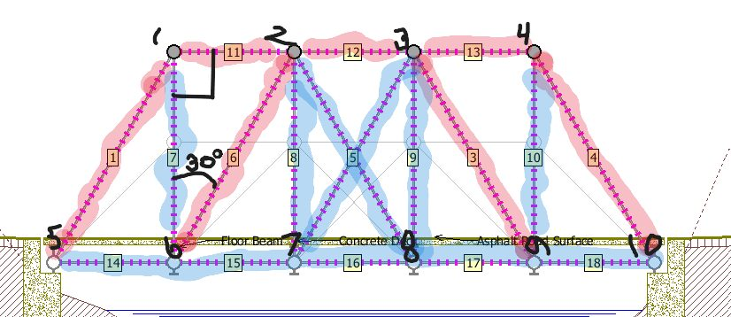
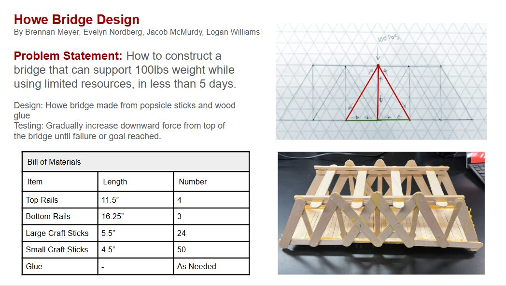

Truss bridge
I designed the truss, labeled every member tension or compression, built it, and load-tested it to failure.

The problem
A drawing of a truss does not tell you where it breaks. In ENGR-101 the job was to predict that, build the bridge, and load it until the prediction met the real thing.
What I did
- Modeled the truss and labeled each joint and member.
- Classified members by tension or compression to predict where it would fail.
- Built the physical bridge.
- Load-tested it to failure and compared the result with the prediction.
- Wrote it up as a formal engineering report and a summary poster.
The course grade for ENGR-101 was an A. The rest of that class — a water filter, CAD models, and Arduino labs — is in the engineering room. I am not restating a failure load here; the poster and the report are the record, and the photos below are the build.
The record

